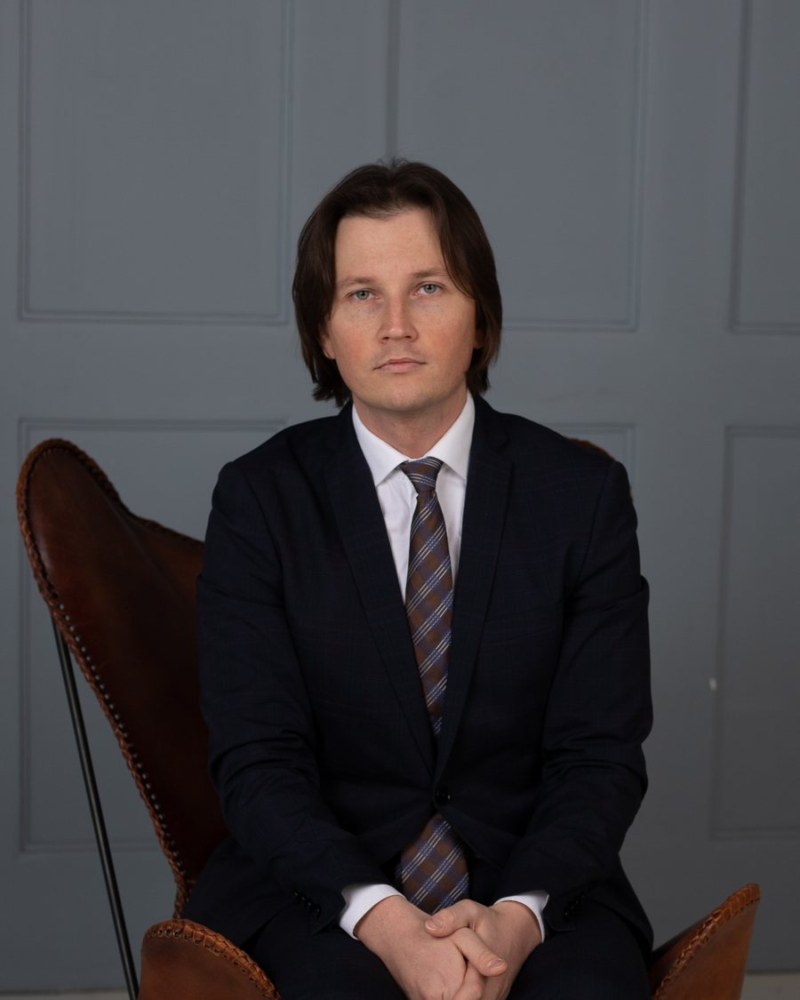

Une pratique juridique à taille humaine, présente pour vos projets en Russie
SalutRussie a commencé comme un cabinet familial. Nous travaillons aujourd’hui sur des dossiers dans différentes régions de Russie, en définissant d’abord la stratégie et les étapes adaptées au cas concret.

Lev Vtiurin
Juriste en droit migratoire, fondateurPlus de vingt ans de pratique juridique en Russie, notamment en droit migratoire, dans les dossiers complexes et la défense devant les tribunaux.
Il étudie la situation, explique les risques et détermine avec le client les démarches à entreprendre.
Une stratégie avant les démarches
Nous commençons par les faits et les documents. Nous définissons les questions juridiques, les options à vérifier et les étapes utiles. Le périmètre de l’accompagnement est convenu avant toute intervention.
Votre situation
Vous décrivez votre objectif et les difficultés rencontrées.
Analyse
Nous vérifions les faits, les documents et le cadre juridique applicable.
Plan
Nous proposons une séquence de démarches et signalons les risques.
Accompagnement
Nous intervenons dans les limites convenues ensemble.
Agir légalement et avec méthode à chaque étape
Nous accompagnons les questions de séjour, de logement, d’activité économique et d’adaptation en Russie. Nous ne promettons pas de décision administrative : chaque dossier dépend des faits et des règles applicables.
Un accompagnement pour votre situation ?
Choisissez votre domaine de consultation. Le périmètre et les tarifs seront confirmés avant tout engagement.